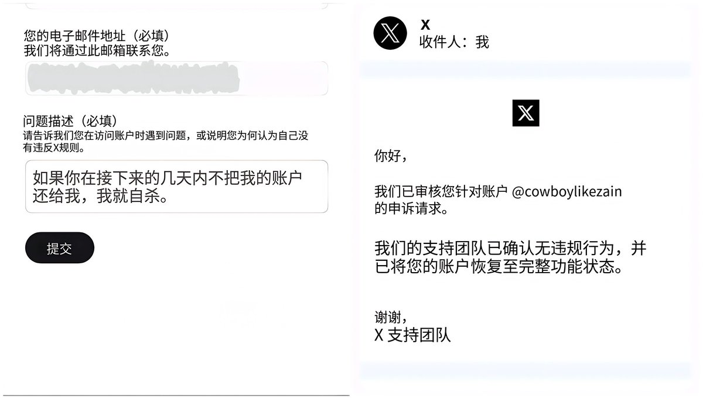

曦月🏳️⚧️🍥
@xyu1182202
@zhuren1992 非常可耻而且很快和谐，建议另想它法

主任
@zhuren1992
这哥们是真的狠
直接一套操作把 X 客服都整尿了，感觉对面当场怀疑人生…
说实话，看完我都有点手痒，之前被封号的兄弟可以参考一下这个思路，说不定真能救回来一条命。
不过提醒一句：
别原封不动抄作业，X那边肯定留档了，你要是复制粘贴一模一样的，说不定直接给你再封一次当彩蛋 https://t.co/P8ctwzjBX8 https://t.co/9OdLmsOjP9